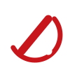

Landings de campaña · uso interno
Misma estructura, mismo diseño, mismo CTA. Lo único que cambia es el copy del avatar.
Antes de publicar: pega el link de pago, el WhatsApp y el VSL en assets/fixus.js. Ver README.